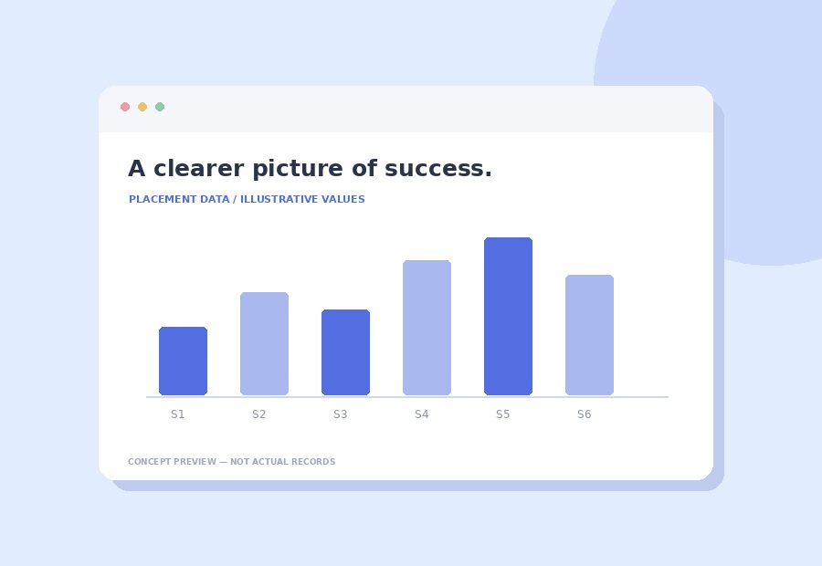

Compare your sessions
Bar and Pie views let visitors explore the same placement dataset.
Turn session counts into a branded dashboard with visitor-switchable charts, an automatic total and a clear session table.

What JA Graph & Chart gives you, in short.
The three things most people use JA Graph & Chart for.
Bar and Pie views let visitors explore the same placement dataset.
Student counts are summed automatically from your chart rows.
Embed your graph in pages, posts and supported editor locations.
JA Graph & Chart is a WordPress plugin for professional student placement dashboards. Built by Md. Joynal Abedin for educational consultancies and placement agencies, it supports organisations like Away Scholars that display visa placement records.
| Feature | Detail |
|---|---|
| Chart types | Bar and Pie; visitors can switch live. |
| Dynamic scaling | The Y-axis and bar thickness adjust as sessions are added. |
| Auto-calculated total | Summed from chart data; no separate total field. |
| Responsive design | Optimised for mobile, tablet, laptop and desktop. |
| Full-width layout | Breaks out of theme content-width constraints on PC and laptop. |
| Brand colours | Primary and secondary colour pickers apply across the dashboard. |
| Unlimited sessions | Add chart rows as needed; the chart reflows automatically. |
| No page builder needed | Shortcodes work in Gutenberg, Classic Editor, Elementor and widgets. |
Go to WordPress Admin → Plugins → Add New → Upload Plugin. Choose ja-graph-chart.zip and click Install Now.
Click Activate Plugin. The JA Graphs menu appears in the admin sidebar.
Open JA Graphs. The Settings page confirms the plugin is running.
The supplied manual instructs users updating an older version to deactivate and delete it before uploading the new ZIP. Its data-retention behavior is not documented here; take a database backup before following that update process.
Open JA Graphs → Add New Graph.
Enter the dashboard heading in the Title field above the meta boxes. Example: AWAY SCHOLARS – JAPAN SUCCESS JOURNEY.
Complete General Settings: subtitle, colour pickers, chart section title and footer message.
In Chart Data (Sessions), click + Add Session and add a row for each placement session.
Fill in Sidebar: SSW Placements and Sidebar: Total Summary to populate the right-hand panel.
Click Publish in the top-right corner to save all fields.
Copy the code from the Shortcode box in the editor sidebar, for example [ja_chart id="5" type="bar"].
Paste the shortcode into a page or post and publish it. The dashboard appears at that location.
This meta box controls the overall appearance and wording of the dashboard.
| Field | Purpose | Example |
|---|---|---|
| Subtitle / Tagline | Italic line beneath the title in the dark header. | Building Dreams, Shaping Futures in Japan |
| Primary Colour | Chart bars, card-title accent, total badge and sidebar box 2 header. | #1d70b8 (blue) |
| Secondary Colour | SSW sidebar box header accent. | #d62027 (red) |
| Chart Section Title | Label above the chart, with a left colour bar. | STUDENT VISA PLACEMENTS IN JAPAN |
| Footer Message | Text in the dark footer strip. | Your Trust is Our Motivation |
Click a colour field to open the WordPress colour picker, or type a hex code directly.
Each row becomes one bar in a bar chart or one slice in a pie chart.
Click + Add Session.
Enter Session / Label, such as April 2024 or July 2025.
Enter Students Sent: the number placed in that session.
Click a field and type to edit it. Changes are saved when you click Update or Publish. Click the red ✕ button on a row to remove it.
The blue running total above the table updates as you type. This same total appears in the Total Student Placements badge on the front end. You do not need to enter it anywhere else.
The supplied Graph & Chart manual ends at chart scaling. Detailed sidebar field definitions and additional shortcode options have not been supplied.
Questions about JA Graph & Chart? Talk to the developer directly.